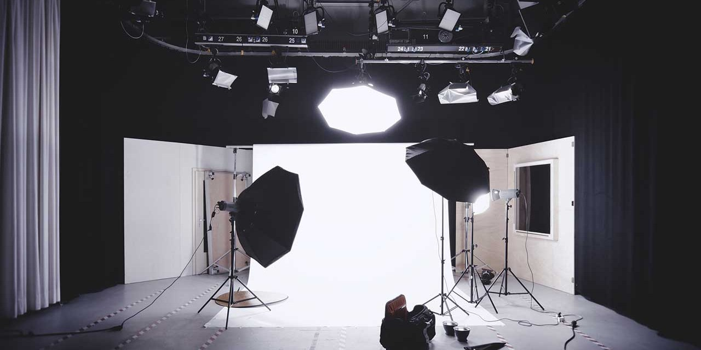

Backdrops
There are a few things to consider when choosing a backdrop size, including the size of your studio and the size of your subject.
Portrait subjects should typically be pulled at least 3’ away from your backdrop to prevent shadows and allow for easy lighting. Of course, this distance your subject will be from the backdrop will be altered when taking overhead or backlit/high key shots. Below, we’ll discuss both the length and width restrictions of common backdrops.
